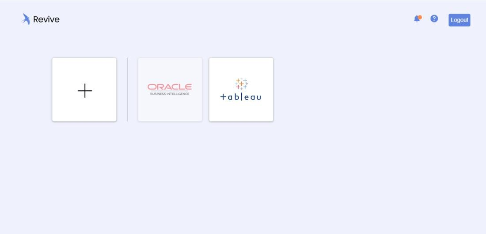

Get Started with Revive
Accessing Revive
-
Locate:
-
Revive exe sent by admin should be placed in a dedicated folder
-
Extract the exe file into that folder

-
-
Run:
-
Open the ‘Revive’ exe from the folder
-
On Running the exe revive will be installed
-
Below Steps will take you through a typical migration flow for Revive along with small tour of the product.
Login
- Once the installation is complete and connection with PostgreSQL database is established, you are ready to use the software. Credentials for login will be provided by the administrator
Home
- Upon successful login, the home page can be accessed, where the following actions can be taken:
- ‘+’ to begin the migration process
- “i” at the header to know pending number of days and migration runs available during the trial period
- “?” for Help, covering list of supported and un-supported features and the product tour

Migration
- Begin by clicking “+” or Tableau logo and select source and version, destination (in this case Tableau and Power BI respectively) and the version. Click Create to proceed
Folder selection
- As the next step, choose the source and destination paths (folders where you store and manage files used in Revive)
Workbook selection
- All the Workbooks can be seen on the left pane and corresponding Reports and Data-Models are organized on the right pane –
- During a trial phase, users can select only one application at a time for migration
- An option to toggle between migrating only the back-end (data model, transformations…) or everything (including charts) is available
- A Workbook can be selected and its corresponding Reports (all pages) and Data Models (data sources) and can be seen as collapsible options on the right pane
- The data source connection information can be verified and if need be, modified (using the edit icon)
Migration
- Upon confirmation to migrate, the process is completed within a few seconds and the migration summary page appears, where a quick status of the Reports and Data Models can be checked. Options available from the Migration Summary page:
- Statistics: Opens a live Power BI dashboard with detailed statistics on success, exceptions of all migrations
- Folder (Folder Icon): Opens Revive folder with migrated Workbooks
- Launch (Report Icon): Opens report directly on Power BI